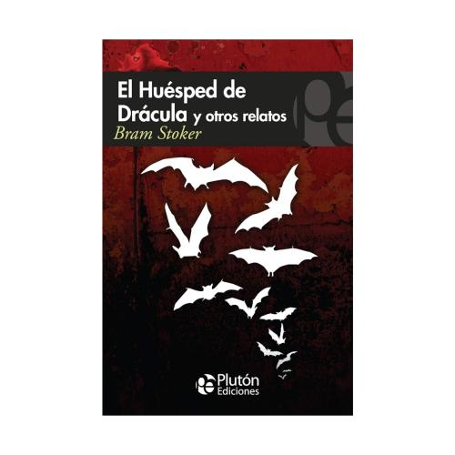
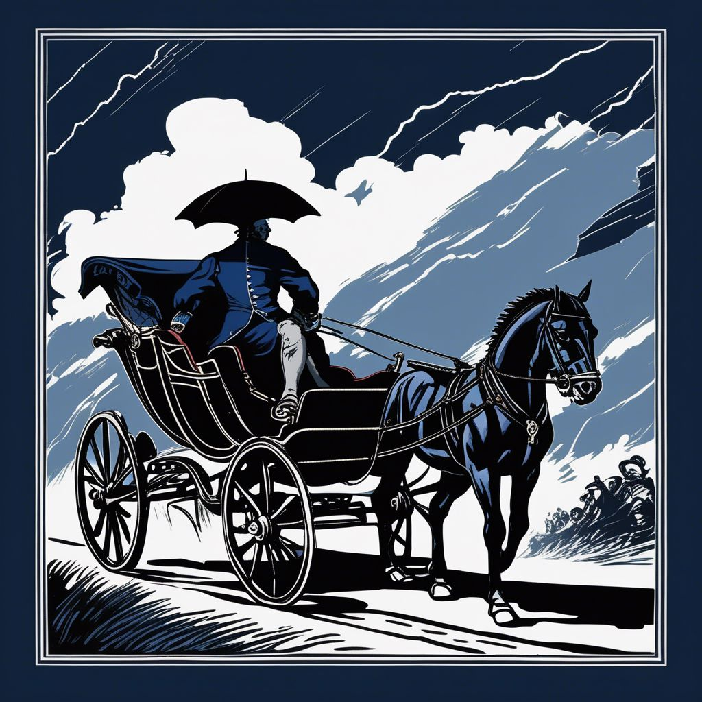
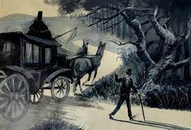
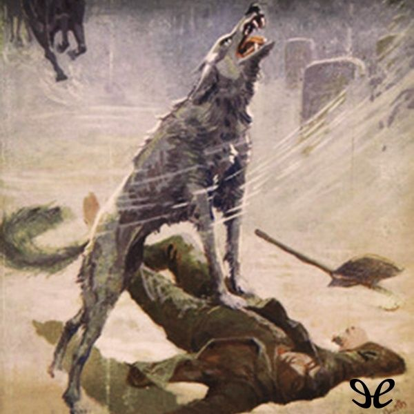
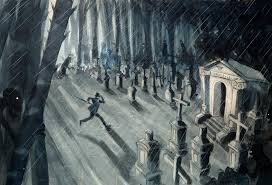
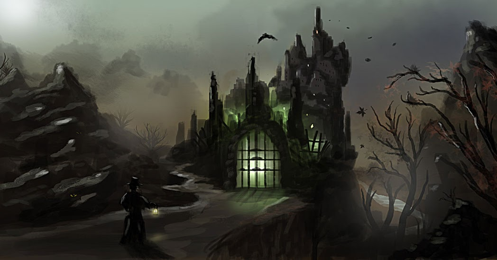
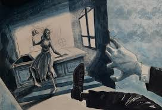
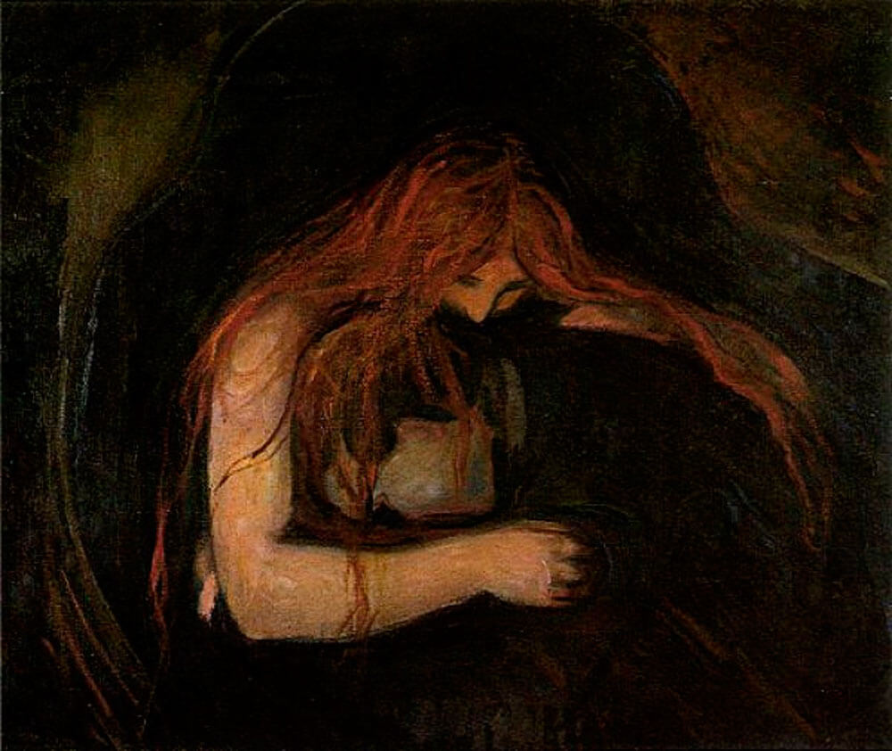
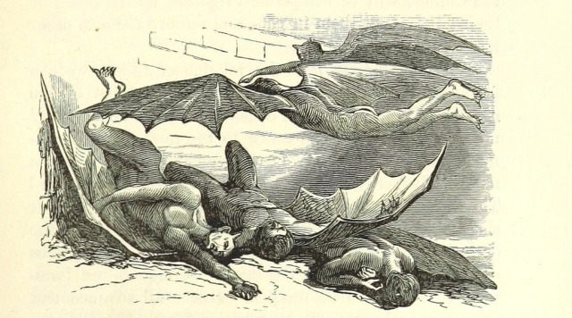

¿De qué trata el libro?
Es una colección de cuentos de terror de Bram Stoker que abordan temas como lo sobrenatural, la muerte y el misterio. El relato principal sirve como introducción al mundo del conde Drácula, y los demás presentan historias inquietantes con atmósferas oscuras y finales sorprendentes.









Trabajos realizados
A continuación, se presentan una serie de actividades breves desarrolladas durante los periodos de clase a lo largo del bimestre. Estas fueron elaboradas con base en la lectura compartida proporcionada por la docente Kayla Vargas y ejecutadas de manera individual por cada integrante del grupo.